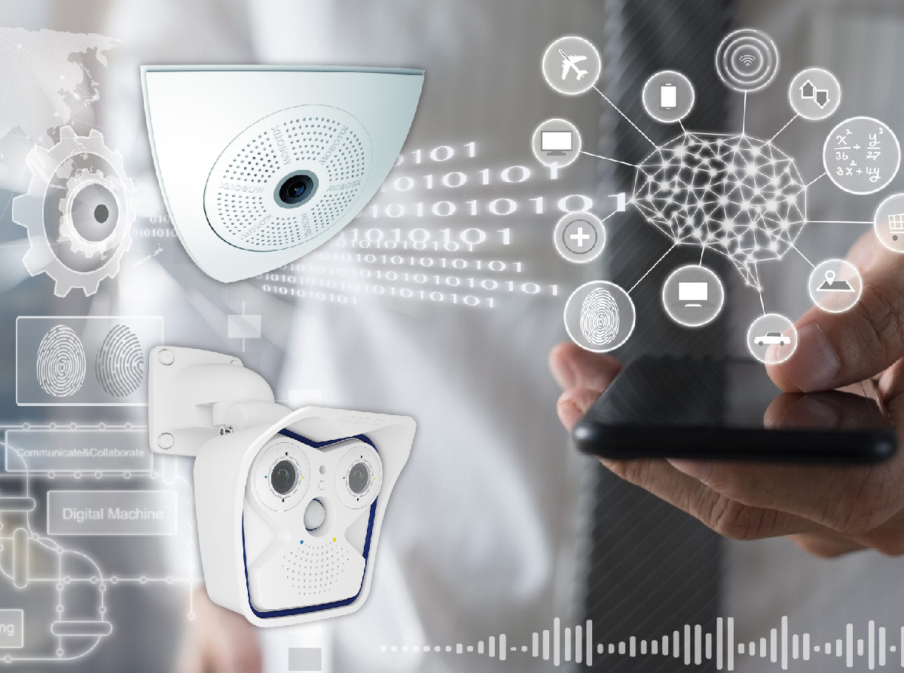

Bienvenido a nuestro producto
Descripción RecRed es una solución tecnológica innovadora diseñada para abordar la creciente preocupación por la seguridad personal, especialmente en entornos urbanos. El producto se centra en proporcionar una red de seguridad inteligente que utiliza tecnologías avanzadas para prevenir y responder eficazmente a situaciones de emergencia. .
Identificacion del problemaSolucion de propuesta
Tecnologias utilizadas
Equipo y colaboraciones
Impacto y Beneficios
Planes
Como funciona
- RecRed es una solución innovadora diseñada para proteger la seguridad personal mediante el uso de tecnología avanzada. Su funcionamiento se basa en una combinación de hardware, software y comunicación inteligente para prevenir y responder eficazmente a situaciones de emergencia.
- Dispositivo portátil:
Cada usuario cuenta con un dispositivo portátil compacto que puede llevar consigo fácilmente, como un dispositivo de pulsera o un pequeño accesorio. Este dispositivo está equipado con sensores y tecnología de comunicación.
Sensores Avanzados: Los sensores integrados en el dispositivo portátil capturan datos del entorno y del usuario, como la ubicación, el movimiento y otros parámetros relevantes para la seguridad personal. Estos sensores pueden incluir GPS, acelerómetros, giroscopios y otros sensores especializados.
Detección de Situaciones de Emergencia: Utilizando algoritmos avanzados basados en inteligencia artificial, SafeNet analiza continuamente los datos capturados por los sensores para detectar patrones de comportamiento sospechoso o situaciones de emergencia. Esto puede incluir movimientos bruscos, cambios repentinos en la ubicación o patrones anómalos.
Botón de pánico: El dispositivo portátil está equipado con un botón de pánico accesible de manera rápida y sencilla. En caso de una emergencia, el usuario puede activar este botón para alertar al sistema ya las autoridades sobre la situación crítica.
Identificacion del problema
- RecRed tiene como objetivo proporcionar a las personas una herramienta poderosa para proteger su seguridad personal, aprovechando la tecnología para prevenir y responder a situaciones de emergencia de manera más eficiente.

Solucion de propuesta
Demostraciones o prototipos
 Regresar a arribaTecnologias utilizadas
1. Tecnología Avanzada de Detección • RecRed se destaca por utilizar algoritmos avanzados basados en inteligencia artificial y análisis de patrones para la detección temprana de situaciones de emergencia, ofreciendo una capa de seguridad proactiva.
2. Colaboración con Autoridades y Servicios de Emergencia: • La integración efectiva con autoridades locales y servicios de emergencia fortalece la capacidad de respuesta y coordinación, proporcionando una ventaja competitiva en términos de eficiencia y colaboración.
3. Comunidad Consciente de la Seguridad: • RecRed no solo se centra en la seguridad individual, sino que también fomenta la creación de comunidades conscientes de la seguridad. La capacidad de compartir información y colaborar entre usuarios crea una red de seguridad colectiva única.
4. Interfaces Intuitivas y Experiencia de Usuario Positiva: • El diseño centrado en el usuario y las interfaces intuitivas de RecRed ofrecen una experiencia positiva, facilitando la adopción del usuario y diferenciándose de soluciones menos amigables.
5. Garantía de Privacidad y Cumplimiento Normativo: • RecRed destaca por su enfoque en la privacidad y la seguridad de los datos, cumpliendo con normativas y estándares, lo que genera confianza entre los usuarios en comparación con soluciones que puedan tener preocupaciones de privacidad.
6. Enfoque en la Prevención y Respuesta Rápida: • La combinación de funciones de prevención proactiva y respuesta rápida a emergencias ofrece una solución completa. RecRed no solo responde a situaciones críticas, sino que también trabaja para prevenirlas, marcando una diferencia clave.
Equipo y Colaboraciones
Impacto y Beneficios
Protección de Datos y Privacidad: Impacto: RecRed implementa medidas de seguridad para proteger la privacidad y la integridad de los datos del usuario. Beneficios: Mayor confianza de los usuarios al saber que sus datos personales están seguros y protegidos.
Eficiencia Energética y Sostenibilidad: Impacto: RecRed utiliza tecnologías energéticamente eficientes y sostenibles. Beneficios: Contribución a la sostenibilidad ambiental al minimizar el impacto energético y utilizar materiales eco amigables.
Empoderamiento del Usuario: Impacto: RecRed proporciona a los usuarios el control sobre su seguridad personal. Beneficios: Mayor empoderamiento y capacidad de tomar decisiones informadas sobre su entorno y actividades diarias.
Reducción de la Vulnerabilidad: Impacto: RecRed aborda las preocupaciones de seguridad en entornos urbanos, donde la vulnerabilidad puede ser más alta. Beneficios: Reducción de la sensación de vulnerabilidad y mejora general del bienestar de los residentes urbanos.
Colaboración con Autoridades y Servicios de Emergencia: Impacto: RecRed facilita la colaboración y la comunicación con autoridades locales y servicios de emergencia. Beneficios: Mejora la coordinación y la eficacia de las respuestas de emergencia, fortaleciendo la seguridad a nivel comunitario.
Adaptabilidad y Evolución Continua: Impacto: RecRed se adapta y evoluciona continuamente para abordar nuevas amenazas y desafíos. Beneficios: Garantiza la efectividad a largo plazo del sistema en un entorno que cambia rápidamente.
Planes
Largo Plazo: Expansión a nivel nacional e internacional, integración de nuevas tecnologías de seguridad y colaboración continua con comunidades y autoridades.